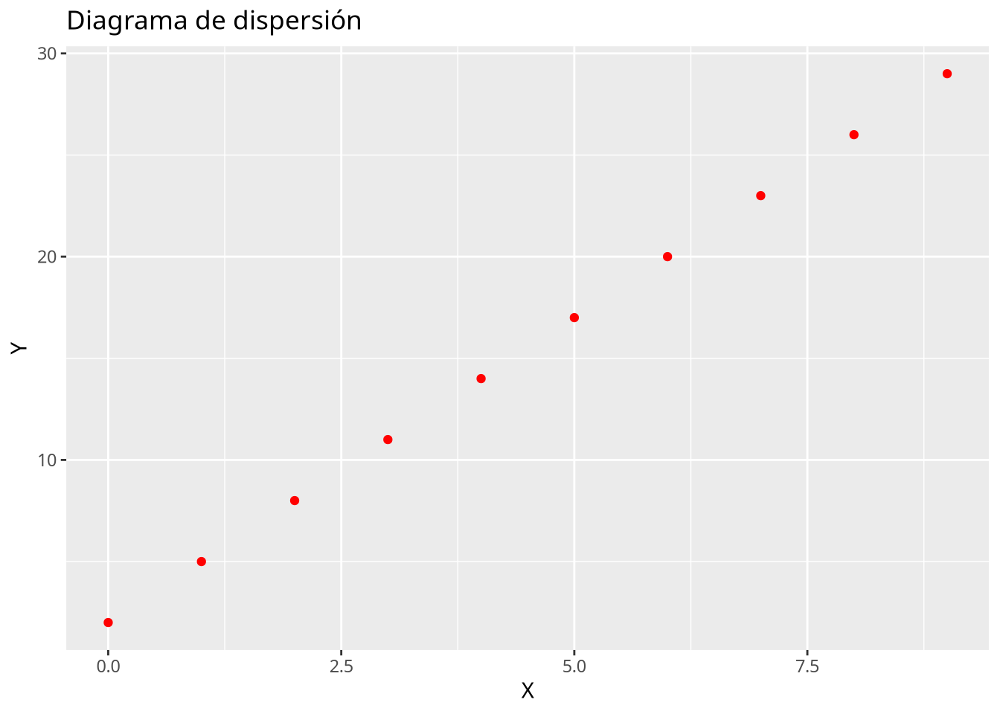
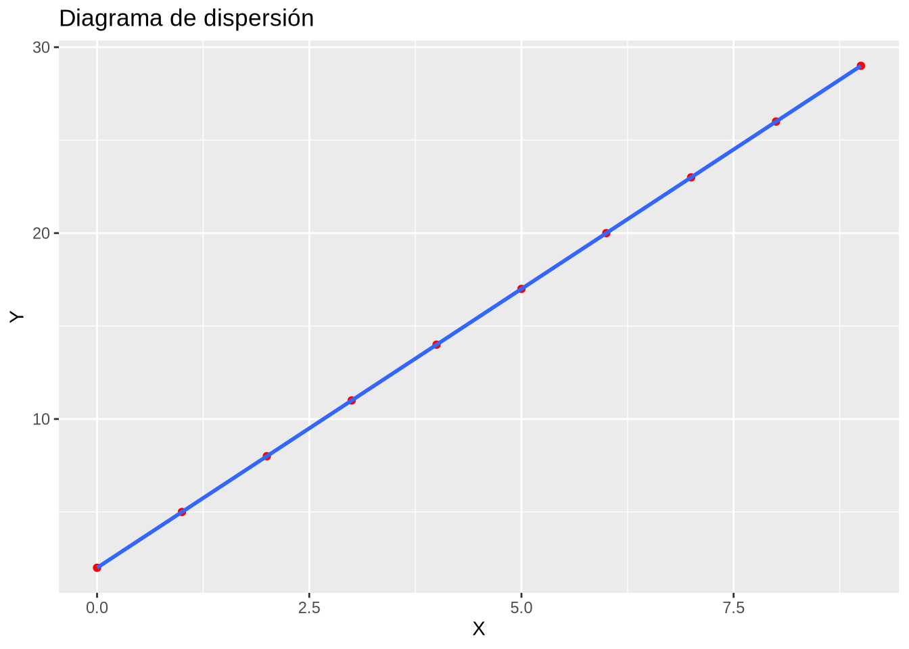

df <- data.frame(
x = c(0, 1, 2, 3, 4, 5, 6, 7, 8, 9),
y = c(2, 5, 8, 11, 14, 17, 20, 23, 26, 29)
)6 Regresión
Esta práctica contiene ejercicios que muestran como construir modelos de regresión simple que describen la relación entre dos variables cuantitativas. En particular se muestra cómo construir los siguientes modelos:
| Modelo | Ecuación general |
|---|---|
| Lineal | \(y=a+bx\) |
| Parabólico | \(y=a+bx+cx^2\) |
| Polinómico de grado \(n\) | \(y=a_0+a_1x+\cdots+a_nx^n\) |
| Potencial | \(y=ax^b\) |
| Exponencial | \(y=e^{a+bx}\) |
| Logarítmico | \(y=a+b\log x\) |
| Inverso | \(y=a+b/x\) |
| Curva S o Sigmoidal | \(y= e^{a+b/x}\) |
6.1 Ejercicios Resueltos
Para la realización de esta práctica se requieren los siguientes paquetes:
library(tidyverse)
# Incluye los siguientes paquetes:
# - readr: para la lectura de ficheros csv.
# - dplyr: para el preprocesamiento y manipulación de datos.
# - tidyr: para la organización de los datos.
# - purrr: para aplicar funciones a vectores.
library(broom) # para convertir las listas con los resúmenes de los modelos de regresión a formato organizado.
library(knitr) # para el formateo de tablas.Ejercicio 6.1 Se han medido dos variables \(X\) e \(Y\) en 10 individuos obteniendo los siguientes resultados:
\[ \begin{array}{lrrrrrrrrrr} \hline X & 0 & 1 & 2 & 3 & 4 & 5 & 6 & 7 & 8 & 9 \\ Y & 2 & 5 & 8 & 11 & 14 & 17 & 20 & 23 & 26 & 29\\ \hline \end{array} \]
-
Crear un conjunto de datos con las variables
xey.Solución -
Dibujar el diagrama de dispersión correspondiente. ¿Qué tipo de modelo de regresión se ajusta mejor a la nube de puntos?
SoluciónCon la función
plotdel paquetegraphics.plot(df$x, df$y, xlab = "X", ylab = "Y", main = "Diagrama de dispersión")Con la función
geom_pointdel paqueteggplot2detidyverse.── Attaching core tidyverse packages ──────────────────────── tidyverse 2.0.0 ── ✔ forcats 1.0.0 ✔ stringr 1.5.1 ✔ lubridate 1.9.4 ✔ tibble 3.2.1 ── Conflicts ────────────────────────────────────────── tidyverse_conflicts() ── ✖ dplyr::filter() masks stats::filter() ✖ kableExtra::group_rows() masks dplyr::group_rows() ✖ dplyr::lag() masks stats::lag() ℹ Use the conflicted package (<http://conflicted.r-lib.org/>) to force all conflicts to become errorsggplot(df, aes(x = x, y = y)) + geom_point(col = "red") + labs(title = "Diagrama de dispersión", x = "X", y = "Y")
El tipo de modelo que mejor se ajusta es lineal, ya que todos los puntos están alineados.
-
Calcular la recta de regresión de \(Y\) sobre \(X\).
SoluciónPara ajustar un modelo de regresión se utiliza la función
lmdel paquetestats. Esta función requiere que se le pase como parámetro la fórmula del modelo de regresión que debe tener la sintaxisy ~ f(x), dondeyes la variable dependiente en el modelo,xes la variable independiente, yf(x)es una expresión matemática que describe el modelo.Warning in summary.lm(recta_y_x): essentially perfect fit: summary may be unreliableCall: lm(formula = y ~ x, data = df) Residuals: Min 1Q Median 3Q Max -3.675e-15 -8.783e-16 5.168e-16 9.646e-16 1.944e-15 Coefficients: Estimate Std. Error t value Pr(>|t|) (Intercept) 2.000e+00 1.049e-15 1.906e+15 <2e-16 *** x 3.000e+00 1.965e-16 1.527e+16 <2e-16 *** --- Signif. codes: 0 '***' 0.001 '**' 0.01 '*' 0.05 '.' 0.1 ' ' 1 Residual standard error: 1.785e-15 on 8 degrees of freedom Multiple R-squared: 1, Adjusted R-squared: 1 F-statistic: 2.33e+32 on 1 and 8 DF, p-value: < 2.2e-16La recta de regresión de \(Y\) sobre \(X\) es \(y = 2 + 3 x\).
-
Obtener el coeficiente de regresión de la recta anterior e interpretarlo.
SoluciónEl coeficiente de regresión es la pendiente de la recta de regresión
Coeficiente de regresión de Y sobre X: 3El coeficiente de regresión de \(Y\) sobre \(X\) vale 3, lo que indica que \(Y\) aumenta 3 unidades por cada unidad que aumenta \(X\).
-
Dibujar la recta de regresión de \(Y\) sobre \(X\) sobre el diagrama de dispersión. ¿Cómo son los residuos del modelo de regresión?
SoluciónCon la función
ablinedel paquetegraphics.Con la función
geom_smoothdel paqueteggplot2detidyverse.library(ggplot2) ggplot(df, aes(x = x, y = y)) + geom_point(col = "red") + geom_smooth(method = "lm") + labs(title = "Diagrama de dispersión", x = "X", y = "Y")`geom_smooth()` using formula = 'y ~ x'
Como la recta pasa por todos los puntos del diagrama de dispersión, los residuos son nulos.
-
Calcular el coeficiente de determinación del modelo lineal e interpretarlo.
SoluciónWarning in summary.lm(recta_y_x): essentially perfect fit: summary may be unreliableCoeficiente de determinación lineal R²: 1Como el coeficiente de determinación lineal vale 1, el ajuste de la recta de regresión es perfecto.
-
Calcular la recta de regresión de \(X\) sobre \(Y\). ¿Coincide con la recta de regresión de \(Y\) sobre \(X\)?
SoluciónWarning in summary.lm(recta_x_y): essentially perfect fit: summary may be unreliableCall: lm(formula = x ~ y, data = df) Residuals: Min 1Q Median 3Q Max -8.668e-16 -4.345e-16 -8.827e-17 3.905e-16 1.196e-15 Coefficients: Estimate Std. Error t value Pr(>|t|) (Intercept) -6.667e-01 4.215e-16 -1.582e+15 <2e-16 *** y 3.333e-01 2.377e-17 1.402e+16 <2e-16 *** --- Signif. codes: 0 '***' 0.001 '**' 0.01 '*' 0.05 '.' 0.1 ' ' 1 Residual standard error: 6.477e-16 on 8 degrees of freedom Multiple R-squared: 1, Adjusted R-squared: 1 F-statistic: 1.967e+32 on 1 and 8 DF, p-value: < 2.2e-16La recta de regresión de \(X\) sobre \(Y\) es \(x = -0.6666667 + 0.3333333 x\), que es la misma que la recta de \(Y\) sobre \(X\), ya que el ajuste es perfecto, y tanto los residuos en \(Y\) como los residuos en \(X\) valen cero para esta recta.
Ejercicio 6.2 El fichero horas-estudio.csv contiene información sobre las horas de estudio diarias de una muestra de alumnos de ingeniería, y el número de asignaturas suspendidas al final del curso.
-
Crear un data frame con los datos de las horas de estudio y los suspensos a partir del fichero
horas-estudio.csv.Soluciónlibrary(readr) df <- read_csv("https://aprendeconalf.es/estadistica-practicas-r/datos/horas-estudio.csv")Rows: 30 Columns: 2 ── Column specification ──────────────────────────────────────────────────────── Delimiter: "," dbl (2): Horas, Suspensos ℹ Use `spec()` to retrieve the full column specification for this data. ℹ Specify the column types or set `show_col_types = FALSE` to quiet this message.head(df)# A tibble: 6 × 2 Horas Suspensos <dbl> <dbl> 1 3.5 1 2 0.6 5 3 2.8 1 4 2.5 3 5 2.6 1 6 3.9 0 -
Dibujar el diagrama de dispersión correspondiente. ¿Qué tipo de modelo de regresión se ajusta mejor a la nube de puntos?
Soluciónlibrary(ggplot2) ggplot(df, aes(x = Horas, y = Suspensos)) + geom_point(col = "red") + labs(title = "Diagrama de dispersión", x = "Horas de estudio", y = "Asignaturas suspensas")El tipo de modelo que mejor se ajusta es lineal, ya que hay una tendencia lineal en la nube de puntos y además es inversa.
-
Calcular la recta de regresión de los suspensos sobre las horas de estudio.
SoluciónCall: lm(formula = Suspensos ~ Horas, data = df) Residuals: Min 1Q Median 3Q Max -1.03614 -0.53214 -0.02013 0.49187 1.22587 Coefficients: Estimate Std. Error t value Pr(>|t|) (Intercept) 4.8491 0.2622 18.49 < 2e-16 *** Horas -1.2300 0.1106 -11.12 8.7e-12 *** --- Signif. codes: 0 '***' 0.001 '**' 0.01 '*' 0.05 '.' 0.1 ' ' 1 Residual standard error: 0.6359 on 28 degrees of freedom Multiple R-squared: 0.8155, Adjusted R-squared: 0.8089 F-statistic: 123.8 on 1 and 28 DF, p-value: 8.7e-12La recta de regresión de los suspensos sobre las horas es \(\textsf{suspensos}= 4.8491273 + -1.2299972 \textsf{horas}\).
-
Obtener el coeficiente de regresión de la recta anterior e interpretarlo.
Solucióncat(paste("Coeficiente de regresión de Suspensos sobre Horas:", recta_suspensos_horas$coefficients[["Horas"]]))Coeficiente de regresión de Suspensos sobre Horas: -1.22999717844331El coeficiente de regresión de los suspensos sobre las horas de estudio vale -1.2299972, lo que indica que por cada hora de estudio se obtendrán 1.2299972 suspensos menos al final del curso.
-
Dibujar la recta de regresión sobre el diagrama de dispersión. ¿El ajuste es mejor o peor que el del ejercicio anterior?
Soluciónlibrary(ggplot2) ggplot(df, aes(x = Horas, y = Suspensos)) + geom_point(col = "red") + geom_smooth(method = "lm") + labs(title = "Diagrama de dispersión", x = "Horas de estudio", y = "Asignaturas suspensas")`geom_smooth()` using formula = 'y ~ x'En este caso el ajuste no es perfecto, ya que es imposible que la recta pase por todos los puntos como ocurría en el ejercicio anterior. Por tanto, el ajuste es peor.
-
Calcular el coeficiente de determinación del modelo lineal e interpretarlo.
SoluciónCoeficiente de determinación lineal R²: 0.81549948723949Como el coeficiente de determinación lineal vale 0.8154995 que está bastante próximo a 1, el ajuste es bueno, y el modelo puede utilizarse con fines predictivos.
-
Utilizar la recta de regresión para predecir el número de suspensos correspondiente a 3 horas de estudio diarias. ¿Es fiable esta predicción?
Soluciónpredict.lm(recta_suspensos_horas, newdata = list(Horas = 3))1 1.159136La predicción será fiable ya que el coeficiente de determinación está próximo a 1 y el tamaño de la muestra no es muy pequeño.
-
Según el modelo lineal, ¿cuántas horas diarias tendrá que estudiar como mínimo un alumno si quiere aprobarlo todo?
SoluciónComo ahora queremos predecir el número de horas de estudio, necesitamos calcular la recta de regresión de la horas sobre los suspensos.
recta_horas_suspensos <- lm(Horas ~ Suspensos, df) predict.lm(recta_horas_suspensos, newdata = list(Suspensos = 0))1 3.607387
Ejercicio 6.3 Después de tomar un litro de vino se ha medido la concentración de alcohol en la sangre en distintos instantes, obteniendo los siguientes datos
\[ \begin{array}{lrrrrrrr} \hline \mbox{Tiempo después (minutos)} & 30 & 60 & 90 & 120 & 150 & 180 & 210\\ \mbox{Alcohol (gramos/litro)} & 1.6 & 1.7 & 1.5 & 1.1 & 0.7 & 0.2 & 2.1\\ \hline \end{array} \]
-
Crear un data frame con los datos del tiempo y la concentración de alcohol.
Solucióndf <- data.frame( Tiempo = c(30, 60, 90, 120, 150, 180, 210), Alcohol = c(1.6, 1.7, 1.5, 1.1, 0.7, 0.2, 2.1) ) -
Calcular el coeficiente de correlación lineal. ¿Existe relación lineal entre la concentración de alcohol y el tiempo que pasa?
SoluciónPara calcular el coeficiente de correlación lineal de Pearson se puede utilar la función
cordel paquetestats.cor(df$Tiempo, df$Alcohol)[1] -0.2730367El valore del coeficiente de correlación lineal es muy bajo, por lo que aparentemente no hay relación lineal entre la concentración de alcohol en sangre y el tiempo que pasa.
-
Dibujar el diagrama de dispersión correspondiente y la recta de regresión de la concentración de alcohol sobre el tiempo. ¿Por qué el ajuste es tan malo?
Soluciónlibrary(ggplot2) ggplot(df, aes(x = Tiempo, y = Alcohol)) + geom_point(col = "red") + geom_smooth(method = "lm") + labs(title = "Diagrama de dispersión", x = "Tiempo en minutos", y = "Concentración de alcohol en sangre (g/l)")`geom_smooth()` using formula = 'y ~ x'El ajuste es malo porque hay un dato atípico que no sigue la misma tendencia que el resto.
-
Eliminar el dato atípico y calcular la recta de la concentración de alcohol sobre el tiempo. ¿Ha mejorado el modelo?
Solución# Eliminamos el dato atípico que está en la fila df <- df[-c(7), ] recta_alcohol_tiempo <- lm(Alcohol ~ Tiempo, df) summary(recta_alcohol_tiempo)Call: lm(formula = Alcohol ~ Tiempo, data = df) Residuals: 1 2 3 4 5 6 -0.27619 0.12095 0.21810 0.11524 0.01238 -0.19048 Coefficients: Estimate Std. Error t value Pr(>|t|) (Intercept) 2.173333 0.201927 10.763 0.000423 *** Tiempo -0.009905 0.001728 -5.731 0.004591 ** --- Signif. codes: 0 '***' 0.001 '**' 0.01 '*' 0.05 '.' 0.1 ' ' 1 Residual standard error: 0.2169 on 4 degrees of freedom Multiple R-squared: 0.8914, Adjusted R-squared: 0.8643 F-statistic: 32.84 on 1 and 4 DF, p-value: 0.004591La recta de regresión de la concentración de alcohol en sangre sobre el tiempo es \(\textsf{alcohol}= 2.1733333 + -0.0099048 \textsf{tiempo}\).
El modelo ha mejorado notablemente ya que ahora el coeficiente de determinación lineal \(R^2=0.8914286\), que está muy próximo a 1.
-
Según el modelo de regresión lineal, ¿a qué velocidad metaboliza esta persona el alcohol?
Solucióncat(paste("Coeficiente de regresión de la concentración de alchol sobre el tiempo:", recta_alcohol_tiempo$coefficients[["Tiempo"]]))Coeficiente de regresión de la concentración de alchol sobre el tiempo: -0.00990476190476191Así pues, la velocidad de metabolización del alcohol es 0.0099048 g/l\(\cdot\)min.
-
Si la concentración máxima de alcohol en la sangre que permite la ley para poder conducir es \(0.3\) g/l, ¿cuánto tiempo habrá que esperar después de tomarse un litro de vino para poder conducir sin infringir la ley? ¿Es fiable esta predicción?
SoluciónComo ahora queremos predecir el tiempo, necesitamos calcular la recta de regresión del tiempo sobre la concentración de alcohol.
recta_tiempo_alcohol <- lm(Tiempo ~ Alcohol, df) predict.lm(recta_tiempo_alcohol, newdata = list(Alcohol = 0.3))1 180Aunque el coeficiente de determinación lineal está próximo a 1, el tamaño muestral es demasiado pequeño para que la predicción sea fiable.
Ejercicio 6.4 El fichero pib-usa.csv contiene información sobre el producto interior bruto de Estados Unidos en billones de dólares americanos desde 1947 hasta 2022.
-
Crear un data frame con los datos del PIB y los años a partir del fichero
pib-usa.csv.Soluciónlibrary(tidyverse) df <- read_csv("https://aprendeconalf.es/estadistica-practicas-r/datos/pib-usa.csv")Rows: 76 Columns: 2 ── Column specification ──────────────────────────────────────────────────────── Delimiter: "," dbl (2): Año, PIB ℹ Use `spec()` to retrieve the full column specification for this data. ℹ Specify the column types or set `show_col_types = FALSE` to quiet this message.head(df)# A tibble: 6 × 2 Año PIB <dbl> <dbl> 1 1947 244. 2 1948 267. 3 1949 276. 4 1950 282. 5 1951 338. 6 1952 362. -
Dibujar el diagrama de dispersión que represente la evolución anual del PIB. ¿Qué tipo de modelo de regresión se ajusta mejor a la nube de puntos?
Soluciónggplot(df, aes(x = Año, y = PIB)) + geom_point(col = "red") + labs(title = "Evolución del PIB de Estados Unidos", x = "Año", y = "PIB en billones dólares")A la vista de la forma de la nube de puntos parece que la evolución del PIB es exponencial.
-
Dibujar el diagrama de dispersión del logaritmo del PIB y los años.
Solucióndf <- mutate(df, logPIB = log(PIB)) ggplot(df, aes(x = Año, y = logPIB)) + geom_point(col = "red") + labs(title = "Evolución del PIB de Estados Unidos", x = "Año", y = "Logaritmo del PIB en billones dólares")La nube de puntos tienen una clara forma lineal, lo que confirma que la evolución del PIB es exponencial.
-
Calcular el modelo de regresión exponencial del PIB sobre los años.
SoluciónCall: lm(formula = log(PIB) ~ Año, data = df) Residuals: Min 1Q Median 3Q Max -0.39115 -0.13495 -0.03532 0.17693 0.29436 Coefficients: Estimate Std. Error t value Pr(>|t|) (Intercept) -1.215e+02 1.951e+00 -62.27 <2e-16 *** Año 6.527e-02 9.832e-04 66.39 <2e-16 *** --- Signif. codes: 0 '***' 0.001 '**' 0.01 '*' 0.05 '.' 0.1 ' ' 1 Residual standard error: 0.188 on 74 degrees of freedom Multiple R-squared: 0.9835, Adjusted R-squared: 0.9833 F-statistic: 4407 on 1 and 74 DF, p-value: < 2.2e-16El modelo de regresión exponencial que mejor explica la evolución del PIB es \(\textsf{PIB}= e^{-121.4998223 + 0.065271 \textsf{Año}}\).
-
¿Cuál es la tasa de crecimiento porcentual anual del PIB?
Solucióncat(paste("Coeficiente de regresión del logaritmo del PIB sobre los años:", recta_logPIB_años$coefficients[["Año"]]))Coeficiente de regresión del logaritmo del PIB sobre los años: 0.0652710244896025El coeficiente de regresión de los suspensos sobre las horas de estudio vale 0.065271, lo que indica que la tasa de crecimiento anual del PIB es 6.5271024%.
-
Dibujar el modelo de regresión exponencial sobre el diagrama de dispersión.
Soluciónggplot(df, aes(x = Año, y = PIB)) + geom_point(col = "red") + geom_smooth(method = "glm", method.args = list(family=gaussian(link="log")))`geom_smooth()` using formula = 'y ~ x'labs(title = "Evolución del PIB de Estados Unidos", x = "Año", y = "Logaritmo del PIB en billones dólares")$x [1] "Año" $y [1] "Logaritmo del PIB en billones dólares" $title [1] "Evolución del PIB de Estados Unidos" attr(,"class") [1] "labels"En este caso el ajuste no es perfecto, ya que es imposible que la recta pase por todos los puntos como ocurría en el ejercicio anterior. Por tanto, el ajuste es peor.
-
¿Es el modelo de regresión exponencial un buen modelo para explicar la evolución del PIB?
SoluciónCoeficiente de determinación exponencial R²: 0.983487569858149Como el coeficiente de determinación lineal vale 0.9834876 que está bastante próximo a 1, el ajuste es bueno, y el modelo exponencial explica muy bien la evolución del PIB.
-
Utilizar el modelo de regresión exponencial para predecir el PIB del año 2024. ¿Es fiable esta predicción?
Solución# El modelo exponencial devuelve el logaritmo del PIB, por lo que hay que aplicar la función exponencial para obtener el PIB. exp(predict.lm(recta_logPIB_años, newdata = list(Año = 2024)))1 40486.8La predicción será fiable ya que el coeficiente de determinación está próximo a 1, el tamaño de la muestra no es muy pequeño y el año para el que se realiza la predicción no está lejos del rango de años de la muestra.
-
¿Cuándo se alcanzará un PIB de 50000 billones de dólares?
SoluciónComo ahora queremos predecir el año en el que se alcanzará el PIB dado, necesitamos construir el modelo de regresión de los años sobre el PIB. Como la relación entre el PIB y los años es exponencial, la relación entre los años y el PIB será la inversa, es decir, el modelo logarítmico.
Call: lm(formula = Año ~ log(PIB), data = df) Residuals: Min 1Q Median 3Q Max -4.4049 -2.5367 0.2662 1.7718 6.4965 Coefficients: Estimate Std. Error t value Pr(>|t|) (Intercept) 1863.498 1.852 1006.29 <2e-16 *** log(PIB) 15.068 0.227 66.39 <2e-16 *** --- Signif. codes: 0 '***' 0.001 '**' 0.01 '*' 0.05 '.' 0.1 ' ' 1 Residual standard error: 2.857 on 74 degrees of freedom Multiple R-squared: 0.9835, Adjusted R-squared: 0.9833 F-statistic: 4407 on 1 and 74 DF, p-value: < 2.2e-16El modelo de regresión logarítmico de los años sobre el PIB es \(\textsf{Año}= 1863.4980331 + 15.0677514 \log(\textsf{PIB})\).
predict.lm(log_años_PIB, newdata = list(PIB = 50000))1 2026.528
Ejercicio 6.5 El fichero dieta.csv contiene información sobre el los kilos perdidos con una dieta de adelgazamiento.
-
Crear un data frame con los datos de la dieta a partir del fichero
dieta.csv.Soluciónlibrary(tidyverse) df <- read_csv("https://aprendeconalf.es/estadistica-practicas-r/datos/dieta.csv")Rows: 40 Columns: 3 ── Column specification ──────────────────────────────────────────────────────── Delimiter: "," chr (1): ejercicio dbl (2): dias, peso.perdido ℹ Use `spec()` to retrieve the full column specification for this data. ℹ Specify the column types or set `show_col_types = FALSE` to quiet this message.df# A tibble: 40 × 3 dias peso.perdido ejercicio <dbl> <dbl> <chr> 1 14 2.95 no 2 18 5.65 no 3 22 6.56 no 4 26 3.56 no 5 30 6.17 no 6 34 9.4 no 7 38 12.4 no 8 42 12.9 no 9 46 13.9 no 10 50 10.8 no # ℹ 30 more rows -
Dibujar el diagrama de dispersión de los kilos perdidos en función del número de días con la dieta. ¿Qué tipo de modelo de regresión se ajusta mejor a la nube de puntos?
Soluciónggplot(df, aes(x = dias, y = peso.perdido)) + geom_point(col = "red") + labs(title = "Diagrama de dispersión del peso perdido y los días de dieta", x = "Días de dieta", y = "Peso perdido en Kg")
La nube de puntos es bastante difusa aunque parece apreciarse una tendencia logarítmica o sigmoidal.
-
Calcular los coeficientes de determinación lineal, cuadrático, exponencial, logarítmico, potencial, inverso y sigmoidal. ¿Qué tipo de modelo explica mejor la relación entre los kilos perdidos y el número de días de dieta? ¿Qué porcentaje de la variabilidad de peso perdido explica el mejor modelo de regresión?
Soluciónlibrary(broom) # Construimos un data frame con el ajuste de los modelos. modelos <- tibble( Lineal = list(lm(peso.perdido ~ dias, df)), Cuadratico = list(lm(peso.perdido ~ dias + I(dias^2), df)), Exponencial = list(lm(log(peso.perdido) ~ dias, df)), Logaritmico = list(lm(peso.perdido ~ log(dias), df)), Potencial = list(lm(log(peso.perdido) ~ log(dias), df)), Inverso = list(lm(peso.perdido ~ I(1/dias), df)), Sigmoidal = list(lm(log(peso.perdido) ~ I(1/dias), df)), ) |> # # Reestructuramos el data frame para tener todos los modelos en la misma columna. pivot_longer(everything(), names_to = "Tipo_Modelo", values_to = "Modelo") |> # Obtenemos un resumen del ajuste de cada modelo en formato organizado (se obtiene una lista con los parámetros que describen el ajuste de cada modelo). mutate(Resumen = map(Modelo, glance)) |> # Desanidamos el resumen (se obtiene una columna para cada parámetro del resumen del ajuste de los modelos). unnest(Resumen) |> # Ordenamos el data frame por el coeficiente de determinación. arrange(-r.squared) modelos |> select(Tipo_Modelo, r.squared) |> kable(col.names = c("Tipo de Modelo", "R²"))Tipo de Modelo R² Sigmoidal 0.6662170 Potencial 0.5684490 Inverso 0.5583853 Cuadratico 0.5397848 Logaritmico 0.5254856 Lineal 0.4356390 Exponencial 0.4308936 El mejor modelo es el Sigmoidal que explica el 66.6216965% de la variabilidad del peso perdido.
-
Dibujar el diagrama de dispersión de los kilos perdidos en función del número de días con la dieta según si la persona hace ejercicio o no. ¿Qué conclusiones se pueden sacar?
Soluciónggplot(df, aes(x = dias, y = peso.perdido, color = ejercicio)) + geom_point() + labs(title = "Diagrama de dispersión del peso perdido y los días de dieta", x = "Días de dieta", y = "Peso perdido en Kg")Claramente la nube de puntos de las personas que hacen ejercicio está por encima de la de los que no hacen ejercicio, lo que indica que hacer ejercicio favorece la pérdida de peso. Los más razonable es construir modelos de regresión para cada grupo.
-
¿Qué tipo de modelo explica mejor la relación entre el peso perdido y los días de dieta en el grupo de las personas que hacen ejercicio? ¿Y en el grupo de las que no hacen ejercicio? ¿Han mejorado los modelos con respecto al modelo anterior?
Soluciónmodelos <- df |> # Anidamos por la columna ejercicio. nest_by(ejercicio) |> # Ajustamos los modelos de regresión. mutate( Lineal = list(lm(peso.perdido ~ dias, data)), Cuadratico = list(lm(peso.perdido ~ dias + I(dias^2), data)), Exponencial = list(lm(log(peso.perdido) ~ dias, data)), Logaritmico = list(lm(peso.perdido ~ log(dias), data)), Potencial = list(lm(log(peso.perdido) ~ log(dias), data)), Inverso = list(lm(peso.perdido ~ I(1/dias), data)), Sigmoidal = list(lm(log(peso.perdido) ~ I(1/dias), data)), ) |> # Reestructuramos el data frame para tener todos los modelos en la misma columna. pivot_longer(-c(ejercicio, data), names_to = "Tipo_Modelo", values_to = "Modelo") |> # Obtenemos un resumen del ajuste de cada modelo en formato organizado (se obtiene una lista con los parámetros que describen el ajuste de cada modelo). mutate(Resumen = map(Modelo, glance)) |> # Desanidamos el resumen (se obtiene una columna para cada parámetro del resumen del ajuste de los modelos). unnest(Resumen) |> # Ordenamos el data frame por la columna ejercicio y por el coeficiente de determinación. arrange(ejercicio, -r.squared) modelos |> select(ejercicio, Tipo_Modelo, r.squared) |> kable(col.names = c("Ejercicio", "Tipo de Modelo", "R²")) |> pack_rows(index = table(modelos$ejercicio))Ejercicio Tipo de Modelo R² no no Sigmoidal 0.7401212 no Cuadratico 0.7100610 no Inverso 0.6796880 no Potencial 0.6700051 no Logaritmico 0.6494521 no Lineal 0.5286338 no Exponencial 0.5222832 si si Inverso 0.8470993 si Sigmoidal 0.8305013 si Logaritmico 0.7885173 si Cuadratico 0.7791671 si Potencial 0.6704843 si Lineal 0.6623502 si Exponencial 0.4945564 El mejor modelo en el grupo de los que hacen ejercicio es el inverso y en el grupo de los que no el sigmoidal. Los modelos han mejorado bastante con respecto al modelo anterior, sobre todo el del grupo de personas que hace ejercicio.
-
Construir el mejor modelo de regresión del peso perdido sobre los días de dieta para el grupo de las personas que hacen ejercicio y para el grupo de las que no.
SoluciónConstruimos el modelo inverso para el grupo de las personas que hacen ejercicio.
Con la función
lmdel paquetestats.inverso_ejercicio <- lm(peso.perdido ~ I(1/dias), df[df$ejercicio == "si", ]) summary(inverso_ejercicio)Call: lm(formula = peso.perdido ~ I(1/dias), data = df[df$ejercicio == "si", ]) Residuals: Min 1Q Median 3Q Max -3.1866 -1.3268 0.0011 0.9810 4.1456 Coefficients: Estimate Std. Error t value Pr(>|t|) (Intercept) 21.5655 0.7653 28.181 2.42e-16 *** I(1/dias) -255.2249 25.5579 -9.986 9.12e-09 *** --- Signif. codes: 0 '***' 0.001 '**' 0.01 '*' 0.05 '.' 0.1 ' ' 1 Residual standard error: 1.811 on 18 degrees of freedom Multiple R-squared: 0.8471, Adjusted R-squared: 0.8386 F-statistic: 99.72 on 1 and 18 DF, p-value: 9.123e-09df |> nest_by(ejercicio) |> mutate(modelo = list(tidy(lm(peso.perdido ~ I(1/dias), data = data)))) |> unnest(modelo) |> filter(ejercicio == "si")# A tibble: 2 × 7 # Groups: ejercicio [1] ejercicio data term estimate std.error statistic p.value <chr> <list<tibble[,2]>> <chr> <dbl> <dbl> <dbl> <dbl> 1 si [20 × 2] (Intercept) 21.6 0.765 28.2 2.42e-16 2 si [20 × 2] I(1/dias) -255. 25.6 -9.99 9.12e- 9Y ahora el modelo sigmoidal para el grupo de las personas que no hacen ejercicio.
Con la función
lmdel paquetestats.sigmoidal_no_ejercicio <- lm(log(peso.perdido) ~ I(1/dias), df[df$ejercicio == "no", ]) summary(sigmoidal_no_ejercicio)Call: lm(formula = log(peso.perdido) ~ I(1/dias), data = df[df$ejercicio == "no", ]) Residuals: Min 1Q Median 3Q Max -0.66026 -0.07192 0.04678 0.13142 0.29633 Coefficients: Estimate Std. Error t value Pr(>|t|) (Intercept) 2.8694 0.1021 28.09 2.55e-16 *** I(1/dias) -24.4226 3.4111 -7.16 1.15e-06 *** --- Signif. codes: 0 '***' 0.001 '**' 0.01 '*' 0.05 '.' 0.1 ' ' 1 Residual standard error: 0.2417 on 18 degrees of freedom Multiple R-squared: 0.7401, Adjusted R-squared: 0.7257 F-statistic: 51.26 on 1 and 18 DF, p-value: 1.146e-06df |> nest_by(ejercicio) |> mutate(modelo = list(tidy(lm(log(peso.perdido) ~ I(1/dias), data = data)))) |> unnest(modelo) |> filter(ejercicio == "no")# A tibble: 2 × 7 # Groups: ejercicio [1] ejercicio data term estimate std.error statistic p.value <chr> <list<tibble[,2]>> <chr> <dbl> <dbl> <dbl> <dbl> 1 no [20 × 2] (Intercept) 2.87 0.102 28.1 2.55e-16 2 no [20 × 2] I(1/dias) -24.4 3.41 -7.16 1.15e- 6 -
Según los mejores modelos de regresión en cada caso, ¿cuántos kilos perderá una persona que hace ejercicio tras 100 días de dieta? ¿Y una que no hace ejercicio?
SoluciónHacemos primero la predicción del peso perdido para la persona que hace ejercicio usando el modelo inverso.
predict.lm(inverso_ejercicio, newdata = list(dias = 100))1 19.01329Y ahora hacemos la predicción del peso perdido para la persona que no hace ejercicio usando el modelo sigmoidal.
# El modelo sigmoidal devuelve el logaritmo del peso perdido por lo que hay que aplicar la función exponencial para obtener el peso perdido. exp(predict.lm(sigmoidal_no_ejercicio, newdata = list(dias = 100)))1 13.80634
6.2 Ejercicios propuestos
Ejercicio 6.6 El conjunto de datos neonatos contiene información sobre una muestra de 320 recién nacidos en un hospital durante un año que cumplieron el tiempo normal de gestación.
Crear un data frame a con los datos de los neonatos a partir del fichero anterior.
Construir la recta de regresión del peso de los recién nacidos sobre el número de cigarros fumados al día por las madres. ¿Existe una relación lineal fuerte entre el peso y el número de cigarros?
Dibujar la recta de regresión calculada en el apartado anterior. ¿Por qué la recta no se ajusta bien a la nube de puntos?
Calcular y dibujar la recta de regresión del peso de los recién nacidos sobre el número de cigarros fumados al día por las madres en el grupo de las madres que si fumaron durante el embarazo. ¿Es este modelo mejor o pero que la recta del apartado anterior?
Según este modelo, ¿cuánto disminuirá el peso del recién nacido por cada cigarro más diario que fume la madre?
Según el modelo anterior, ¿qué peso tendrá un recién nacido de una madre que ha fumado 5 cigarros diarios durante el embarazo? ¿Y si la madre ha fumado 30 cigarros diarios durante el embarazo? ¿Son fiables estas predicciones?
¿Existe la misma relación lineal entre el peso de los recién nacidos y el número de cigarros fumados al día por las madres que fumaron durante el embarazo en el grupo de las madres menores de 20 y en el grupo de las madres mayores de 20? ¿Qué se puede concluir?
Ejercicio 6.7 El conjunto de datos edad.estatura contiene la edad y la estatura de 30 personas.
Crear un data frame con los datos de las edades y las estaturas a partir del fichero anterior.
Calcular la recta de regresión de la estatura sobre la edad. ¿Es un buen modelo la recta de regresión?
Dibujar el diagrama de dispersión de la estatura sobre la edad. ¿Alrededor de qué edad se observa un cambio en la tendencia?
Recodificar la variable edad en dos grupos para mayores y menores de 20 años.
Calcular la recta de regresión de la estatura sobre la edad para cada grupo de edad. ¿En qué grupo explica mejor la recta de regresión la relación entre la estatura y la edad?
Dibujar las rectas de regresión anteriores.
¿Qué estatura se espera que tenga una persona de 14 años? ¿Y una de 38?
Ejercicio 6.8 El conjunto de datos gapminder del paquete gapminder contiene información sobre la esperanza de vida, la población, y el PIB per cápita en dólares PPP de los principales países en un rango de años.
Instalar el paquete
gapmindery cargarlo.¿Qué tipo de modelo explica mejor la evolución de la población con los años? Construir ese modelo.
¿Qué tipo de modelo explica mejor la relación entre la esperanza de vida y el PIB per cápita?
¿Qué tipo de modelo explica mejor la relación entre la esperanza de vida y el PIB r cápita para cada continente? Construir el mejor modelo en cada caso y utilizarlo para predecir la esperanza de vida de una persona de cada continente con un PIB per cápita de 1000 dólares PPP.